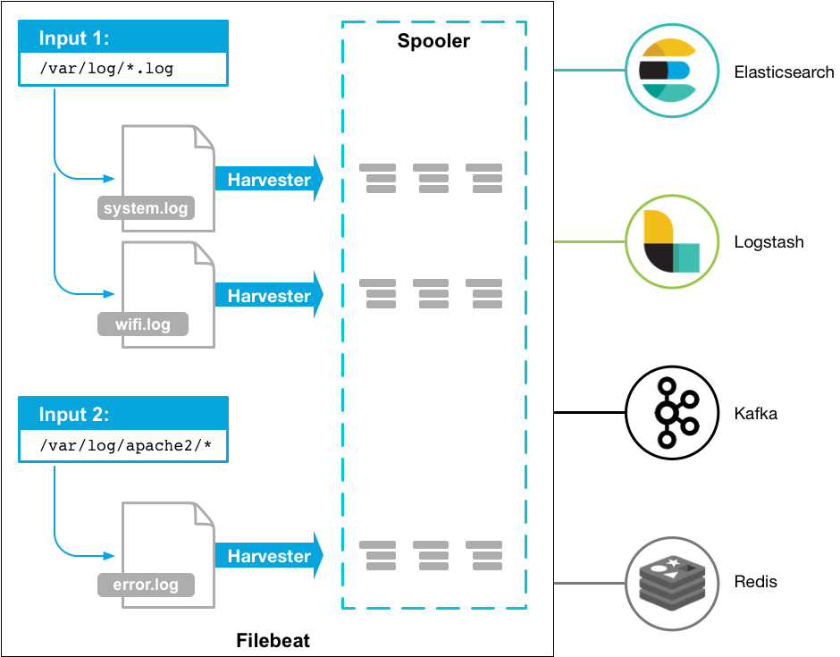
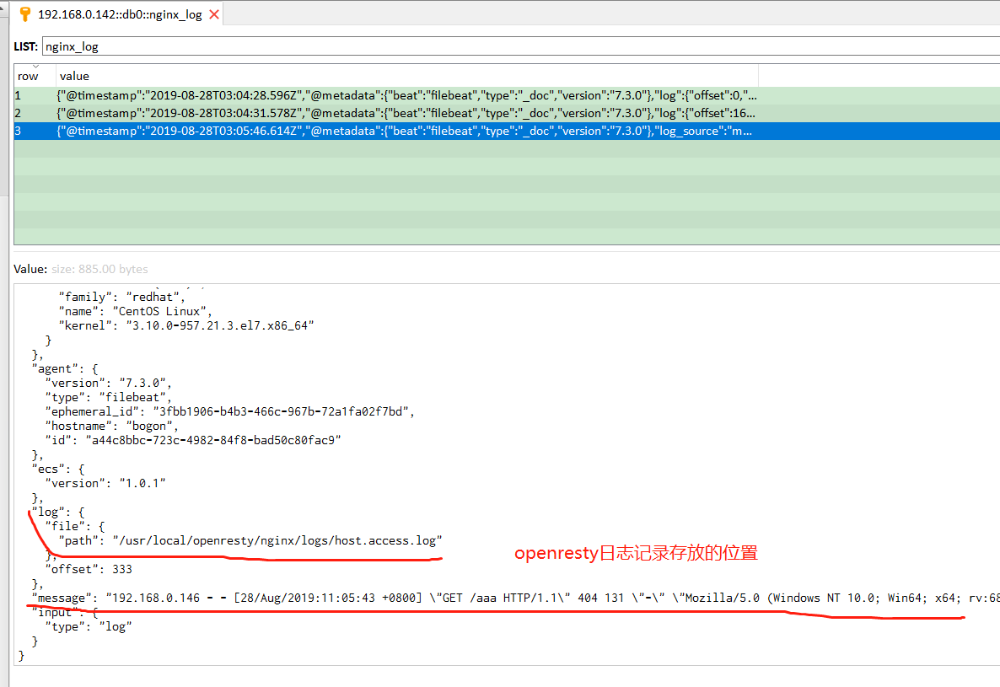

Filebeat是一个日志文件托运工具，在你的服务器上安装客户端后，filebeat 会监控日志目录或者指定的日志文件，追踪读取这些文件（追踪文件的变化，不停的读），并且转发这些信息到elasticsearch 或者 logstarsh 、redis、kafka 中存放。

当你开启filebeat程序的时候，它会启动一个或多个探测器（prospectors）去检测你指定的日志目录或文件，对于探测器找出的每一个日志文件，filebeat 启动收割进程（harvester），每一个收割进程读取一个日志文件的新内容(逐行读取)，并发送这些新的日志数据到处理程序（spooler），处理程序会集合这些事件，最后filebeat会发送集合的数据到你指定的地点。
以 Linux 系统为例
参考文档：filebeat-installation-configuration
curl -L -O https://artifacts.elastic.co/downloads/beats/filebeat/filebeat-8.6.1-linux-x86_64.tar.gz
tar xzvf filebeat-8.6.1-linux-x86_64.tar.gz编辑配置文件来配置filebeat，对于rpm或者deb包安装来说，默认配置文件是 /etc/filebeat/filebeat.yml 这个文件。
这里有一个简单的filebeat的配置文件filebeat.yml的样本，filebeat会使用很多默认的选项。
filebeat.yaml 文件配置了 filebeat 需要采集的文件信息和输出信息。
如监听 nginx 日志，输出到 redis 中，自定义配置文件地址 /etc/filebeat/conf.d/nginx.yml
vim /etc/filebeat/conf.d/nginx.yml
filebeat.inputs:
- type: log
enabled: true
tail_files: true
paths: # 定义你的日志文件的路径（一个或多个）, 支持正则
- /alidata/log/nginx/access.log
- /alidata/log/nginx/access.1.log
- /alidata/log/nginx/*.log
# fields表示在filebeat收集的日志中多增加一个字段log_source,其值用来在logstash的output输出到elasticsearch中判断日志的来源，从而建立相应的索引
fields:
log_source: access
# fields_under_root设置为true，表示上面新增的字段是顶级参数
fields_under_root: true
# prospector扫描新文件的时间间隔，默认10秒
scan_frequency: 3s
# 单文件最大收集的字节数，单文件超过此字节数后的字节将被丢弃，默认10MB，需要增大，保持与日志输出配置的单文件最大值一致即可
max_bytes: 10485760000
# 又一个日志源监听
- type: log
enabled: true
paths:
- /usr/local/nginx/logs/error.log
tags: ["nginx-log-error"]
fields:
log_source: error
fields_under_root: true
output.redis:
hosts: ["127.0.0.1:6379"]
key: NginxLog
password: 111111
db: 1
datatype: list启动监听任务：
filebeat -c /etc/filebeat/conf.d/nginx.yml
# 参数说明
# -e 日志输出到 stderr 并禁用 syslog/file 输出
# -c 指定配置文件
# -d 启用对指定选择器的调试，publish 可以看到完整的 event 信息
sudo nohup filebeat -e -c filebeat.yml -d "publish" >filebeat.log 2>&1 &
# FileBeat 会在注册表中存储每个文件收集的状态，
# 想强制 FileBeat 从日志的最开始重新读取，可以直接删除注册表文件
sudo rm data/registry
# deb/rpm 安装路径
sudo rm /var/lib/filebeat/registry
# 查看 filebeat 运行日志，发送的事件格式
tail -100f /var/log/filebeat/filebeatfilebeat支持输出到不同的设备，可以直接输出到 elasticsearch 或者通过 logstash 格式化日志在到 es。在最新的版本7.10.1只支持输出到一个ouput中。
output.logstash:
hosts: ["192.168.0.126:5047"]或者
output.elasticsearch:
hosts: ["192.168.0.126:9200"]对于多组日志我们可以定义多个input收集数据，指定不同的fields.tag，对不同的日志进行切分，数据写入到不同的索引中，也可以配置不同的conf文件，启动多个不同的filebeat分别采集数据。

output.redis:
hosts: ["localhost"]
key: "default_list"
keys:
- key: "error_list" # send to info_list if `message` field contains INFO
when.contains:
message: "error"
- key: "debug_list" # send to debug_list if `message` field contains DEBUG
when.contains:
message: "DEBUG"
- key: "%{[fields.list]}"默认的key值是default_list，keys的值是动态分配创建的，当redis接收到的日志中message字段的值包含有error字段，则创建key为error_list，当包含有DEBUG字段，则创建key为debug_list。
问题的解决方法是在每个应用的输出日志中新增一个能够区分这个日志的值，然后再在keys中设置，这样一来就能够把不同应用的日志输出到不同的redis的key中。
output {
# 根据redis键 messages_secure 对应的列表值中，每一行数据的其中一个参数来判断日志来源
if [log_source] == 'messages' { # 注意判断条件的写法
elasticsearch {
hosts => ["http://192.168.80.104:9200"]
index => "filebeat-message-%{+YYYY.MM.dd}"
#user => "elastic"
#password => "elastic123"
}
}
}
[program:filebeat_nginx]
command= /usr/bin/filebeat -e -c /etc/filebeat/conf.d/nginx.yml 优势
Logstash 主要的有点就是它的灵活性，主要因为它有很多插件，详细的文档以及直白的配置格式让它可以在多种场景下应用。我们基本上可以在网上找到很多资源，几乎可以处理任何问题。
劣势
Logstash 致命的问题是它的性能以及资源消耗(默认的堆大小是 1GB)。尽管它的性能在近几年已经有很大提升，与它的替代者们相比还是要慢很多的。
作为 Beats 家族的一员，Filebeat 是一个轻量级的日志传输工具，它的存在正弥补了 Logstash 的缺点：Filebeat 作为一个轻量级的日志传输工具可以将日志推送到中心 Logstash。
优势
Filebeat 只是一个二进制文件没有任何依赖。它占用资源极少，尽管它还十分年轻，正式因为它简单，所以几乎没有什么可以出错的地方，所以它的可靠性还是很高的。它也为我们提供了很多可以调节的点，例如：它以何种方式搜索新的文件，以及当文件有一段时间没有发生变化时，何时选择关闭文件句柄。
劣势
Filebeat 的应用范围十分有限，所以在某些场景下我们会碰到问题。例如，如果使用 Logstash 作为下游管道，我们同样会遇到性能问题。正因为如此，Filebeat 的范围在扩大。开始时，它只能将日志发送到 Logstash 和 Elasticsearch，而现在它可以将日志发送给 Kafka 和 Redis，在 5.x 版本中，它还具备过滤的能力。
其他像 Fluentd、Logagent、rsyslog 不做更多介绍，各有优劣，详情查看 详解日志采集工具--Logstash、Filebeat、Fluentd、Logagent对比
[1] filebeat-installation-configuration: https://www.elastic.co/guide/en/beats/filebeat/8.6/filebeat-installation-configuration.html[2] 详解日志采集工具--Logstash、Filebeat、Fluentd、Logagent对比: https://zhuanlan.zhihu.com/p/63725444